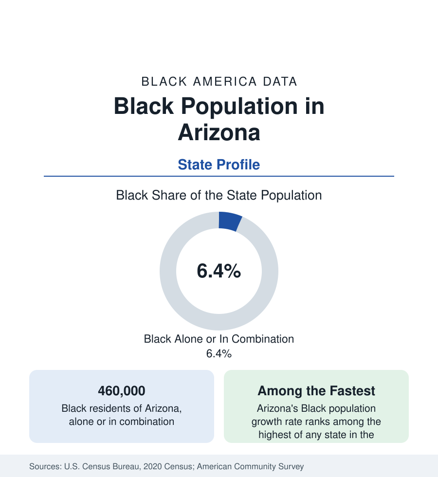

Black Census
Black Population in Arizona: The Desert's Fast Growth
About 460,000 Black Arizonans — one in sixteen residents — in one of the fastest-growing Black populations of any state. The census profile.

Arizona holds about 460,000 Black residents — Black alone or in combination — roughly one in sixteen of its people, with Black alone at about 339,000, or 4.7 percent. The share is the West's smaller pattern; the growth rate is the story. Arizona's Black population has grown faster than almost any state's across the past several censuses, built by the Phoenix metro's boom, a significant military presence, and a retiree and family migration that mirrors the state's overall influx at a younger age profile. This article profiles the population in the census data.
Phoenix: Four in Five Live Here
The Phoenix metropolitan area holds roughly four in five Black Arizonans — about 240,000 to 260,000 people across Maricopa County, with the detailed profile in the cities section. Tucson, the state's second metro, holds the second community: some 40,000 to 50,000 Black residents around the university and Davis-Monthan Air Force Base, at roughly 5 to 6 percent of the metro. Beyond the two metros the population thins to the military and border towns — Sierra Vista (Fort Huachuca) records one of the state's highest Black shares for its size, in the mid-teens, on the Army intelligence center's workforce — and the small communities of Yuma, Flagstaff, and the retirement corridors.
Building a Western Black Community
Arizona's Black history is the West's in miniature: Buffalo Soldier regiments garrisoned the territory's forts (Huachuca was a Black cavalry post), early Phoenix held a segregated Black district south of the tracks whose institutions — churches, the Carver schools and museum — anchored a small community through the territorial and early statehood eras, and the postwar decades brought the aerospace, military, and service-economy migration. The population's modern character was set by the boom: from the 1990s onward, Black families and professionals arrived from California (whose housing costs are the migration data's constant), the Midwest, and the South, settling disproportionately in the Valley's new suburbs — Chandler, Gilbert, Peoria, Goodyear, Surprise, and the south Phoenix districts — in homeowner subdivisions rather than a historic core.
Composition and Indicators
The result is a Black population demographically unlike the historic ones in this section: younger, more suburban from arrival, more likely to be a newcomer, and — in the survey data — recording income and homeownership figures above the national Black averages, reflecting both the migrant selectivity and the region's housing economics. Attainment runs near national Black averages with Arizona State University's large enrollment as the pipeline's center; the state has no HBCU. The diversity layer is growing: Phoenix holds significant African immigrant communities, including one of the larger refugee-resettlement populations of the interior West. Health data follow the desert West's pattern in the public health tables, with the access geography of a sprawling metro as the operative variable.
Growth and the Estimates
The estimates program keeps Arizona's Black population among the nation's fastest-growing in percentage terms, compounding at rates the older Black states cannot match — the same mathematics as the state's overall boom, in which each decade's census finds a materially larger community than the last. The political and institutional data lag the demography in the standard way: representation, Black institutional infrastructure, and the cultural economy are being built by the current generation at the scale the numbers already justify.
Reading the Arizona Numbers
Arizona is the growth profile of the contemporary West: a Black population whose share (one in sixteen) describes its past and whose trajectory describes its future. Read it with Nevada and the Texas metros as the Sun Belt's western tier — places where Black America is being built new, in suburbs, without the historic districts the older profiles begin from.
The Military Thread
Arizona's Black population carries an unusually military signature, and the data show it in both directions: the installations (Luke Air Force Base in the Valley, Davis-Monthan in Tucson, Fort Huachuca in the south, the Yuma proving grounds) seed Black communities wherever they stand — Sierra Vista's share exists because of Huachuca's intelligence mission — and the veteran population they retire into the state is disproportionately Black relative to the state's share. The military channel also explains part of the population's income profile: a stream of residents arriving with federal salaries, security clearances, and pension-backed purchasing power, anchoring the suburban communities the growth data describe.
More in Black Census
The Black Population of the United States: Size, Definitions, and Distribution
The Black population of the United States totals 52.8 million — 15.4 percent of the nation. How the Census Bureau defines and counts the population, and where it lives.
Black Median Household Income in the United States
Black median household income stands at $56,490 in the Census Bureau's annual income report — how the figure is measured, how it compares, and what drives it.
The Black Poverty Rate: Levels, Children, and the Long Trend
The official Black poverty rate is 17.1 percent — against 11.1 percent nationally and 7.7 percent for non-Hispanic White Americans. How poverty is measured and what the data show.
Source: U.S. Census Bureau, 2020 Census; American Community Survey; Population Estimates Program.